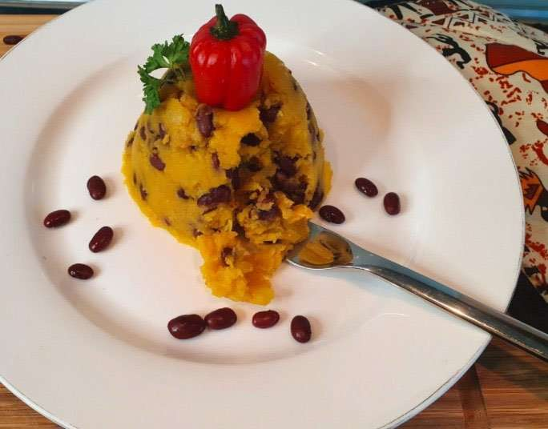

Pile recipe
Pile de pommes
Is a dish from the West of Cameroon made of mashed potatoes and black beans.
Ingredients
- 1 kg peeled and washed potatoes
- 500 g cooked red or black beans
- 80ml palm oil
- 1 cup (235ml) water
- African hot pepper puree (optional) according to your spice tolerance
- Salt
Preparation
- Pour the potatoes into a saucepan, add water, cover and cook. When the potatoes are cooked, pour out the excess water or leave to dry in the open pan
- Add the beans, cover and cook for 5 minutes over low heat
- Add the palm oil, salt, add the chilli puree, crush everything with a pestle or a bottle. Enjoy this dish when it is hot enough